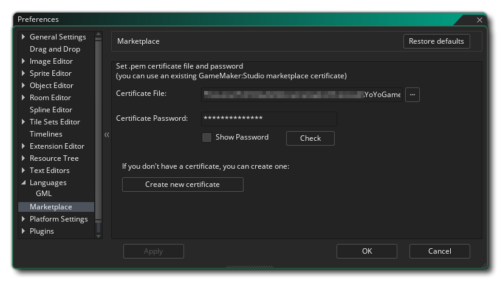

市场偏好设置（Marketplace Preferences）用于设置市场证书（Marketplace Certificate），以上传或购买资产。一个创建好的证书表单由下面的部分组成：
- 证书文件（Certificate File）：这个部分指定用于市场资源认证的*.pem文件。如果你之前创建了一个证书，那么你可以点击此处的文件浏览按钮来将其添加到表单当中（译者注：原文为forum，应该是form），但如果你没有证书文件而想要有一个，那么你应该忽略此处所有信息而去点击下文将要解释的创建新证书（Create New Certificate）按钮。
- 证书密码（Certificate Password）：在此处你必须输入上面所选文件的证书密码。密码是在你第一次创建*.pem文件的时候被创建的（见下文创建一个新证书（Create A New Certificate）），并且会不可逆地被关联到所创建的证书文件上。
- 检查（Check）：一旦你已经填入了上述字段，你应该点击这个按钮来确保密码和所选文件是否正确以及是否能够一起运作。
创建一个新证书
如果你之前没有为市场创建一个证书文件的话，那么你需要点击表单底部标有创建新证书（Create New Certificate）的按钮。当你这样做的时候，一个新窗口会打开并要求你输入如下信息：
- 发布者名称（Publisher Name）：此处名称将用作资源发布者的名字。如果你需要，在市场面板里可以设置不同的开发者，每一个都应该拥有对应的*.pem 证书文件。
- 证书密码（Certificate Password）：在这里，你必须为即将创建的证书设置一个独立的密码。小心你的选择，如果你上面的环节里没有给证书设置正确的密码，你以后再也不能更改，你将不能更新任何外部市场资源（也不能上传新的）。

鉴于那些给你的细节，你可以点击创建证书 按钮生成*.pem 文件。系统会提示你要保存的位置和文件的名称，你应该注意这个以备将来参考。一旦做完，新文件和密码将会自动添加上面列表的窗口字段中，然后你可以点击 检测（Check） 按钮测试是否已经正确的生成证书。
注意： 我们建议对具体设置屏幕截图，以及备份PEM文件。两个放在一起至安全的位置以备将来参考，以防将来某个时候需要重新安装GameMaker Studio 2的情况。除非使用之前创建的相同的证书，否则你不能更新已经上传的资源。.